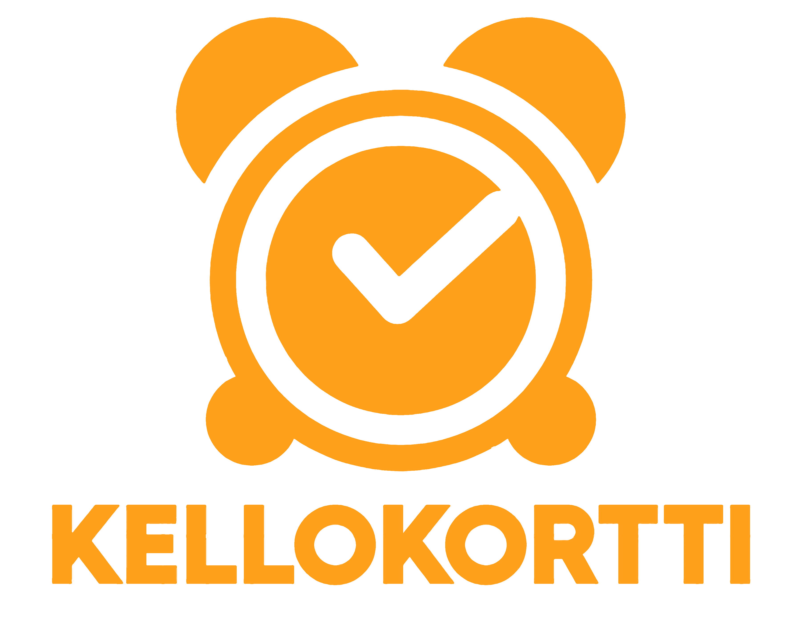

<div class="container">
  <div id="containerlogo">
    
  </div>
  <div class="container-laskuri">
    <button *ngIf="!tyoKaynnissa && !tauko" class="button-big-orange" data-bs-toggle="modal" data-bs-target="#myModal">Käynnistä</button>
    <button *ngIf="!tyo && tauko" class="button-big-orange" (click)="tauoltasisaan()">Jatka</button>
    <button *ngIf="tyoKaynnissa" class="button-big-orange2" (click)="aloitatauko()">Tauko</button>
    <button *ngIf="tyoKaynnissa" class="button-big-orange3" (click)="lopetaPaiva()" data-bs-toggle="modal" data-bs-target="#endModal">Ulos</button>
    <button routerLink="../output" *ngIf="tyovalmis" class="button-big">Tuloste</button>
    <span *ngIf="!showTimer"> <button class="button-small-blue" (click)="toggleTimer()">Näytä päivän saldo</button></span>
    <span *ngIf="showTimer"> <button class="button-small-blue" (click)="toggleTimer()">Piilota päivän saldo</button></span>
    <div [style.display]="showTimer ? 'block' : 'none'">
      <cd-timer class="kello" [autoStart]="false" #basicTimer></cd-timer>
    </div>
  </div>
</div>

<div class="container-leimaus">
  <p class="leimaviesti">Edellinen leimaus : <br />{{ viesti }} <br />{{ saldo }}</p>
</div>
<div class="container-liukuma"></div>

<div class="container-muut">
  <button id="button-saikku">Sairausp.olo</button>
  <button id="button-lupa">Luvallinen p.olo</button>
  <button id="button-ylityo">Ylityö</button>
  <button id="button-liukuma">Liukuma</button>
</div>

<!-- Modal käynnistäessä -->
<div class="modal fade" id="myModal">
  <div class="modal-dialog">
    <div class="modal-content">
      <!-- Modal Header -->
      <div class="modal-header">
        <h4 class="modal-title">Oletko varma?</h4>
        <button type="button" class="btn-close" data-bs-dismiss="modal"></button>
      </div>

      <!-- Modal body -->

      <div class="modal-body">Olet käynnistämässä työajanseurannan. Haluatko jatkaa?</div>

      <!-- Modal footer -->
      <div class="modal-footer">
        <button type="button" id="button-big-white-modal" data-bs-dismiss="modal">Peruuta</button>

        <button *ngIf="!tyoKaynnissa && !tauko" id="button-big-orange-modal" (click)="doActionBasicTimer('start')" (click)="sisaan()" data-bs-dismiss="modal">
          Käynnistä
        </button>
      </div>
    </div>
  </div>
</div>

<!-- Modal lopettaessa -->
<div class="modal fade" id="endModal">
  <div class="modal-dialog">
    <div class="modal-content">
      <!-- Modal Header -->
      <div class="modal-header">
        <h4 class="modal-title">Oletko varma?</h4>
        <button type="button" class="btn-close" data-bs-dismiss="modal"></button>
      </div>

      <!-- Modal body -->

      <div class="modal-body">Olet lopettamassa työajanseurannan. Haluatko jatkaa?</div>

      <!-- Modal footer -->
      <div class="modal-footer">
        <button type="button" id="button-big-white-modal" data-bs-dismiss="modal">Peruuta</button>

        <button *ngIf="!tyoKaynnissa && !tauko" id="button-big-orange-modal" (click)="doActionBasicTimer('stop')" (click)="sisaan()" data-bs-dismiss="modal">
          Käynnistä
        </button>
      </div>
    </div>
  </div>
</div>
<div class="navigaatio">
  <app-navbar></app-navbar>
</div>
